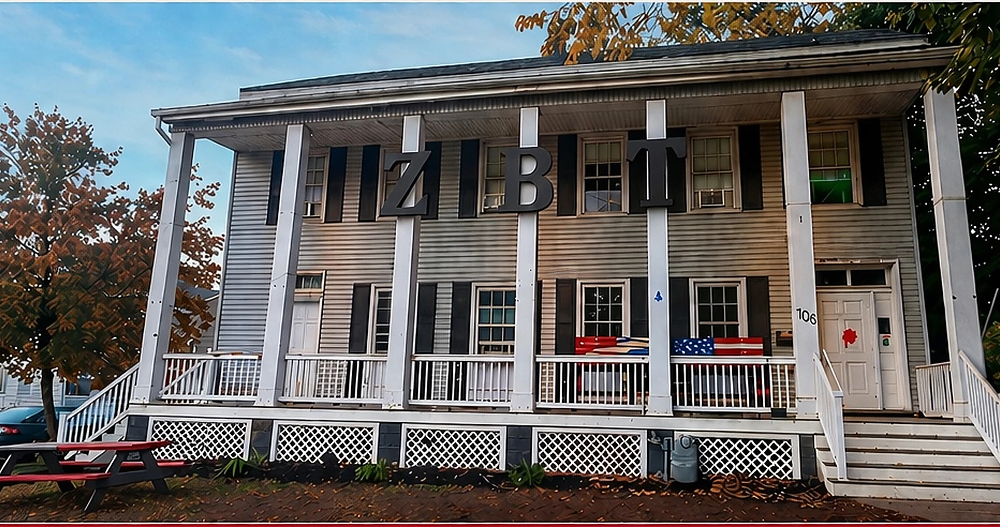
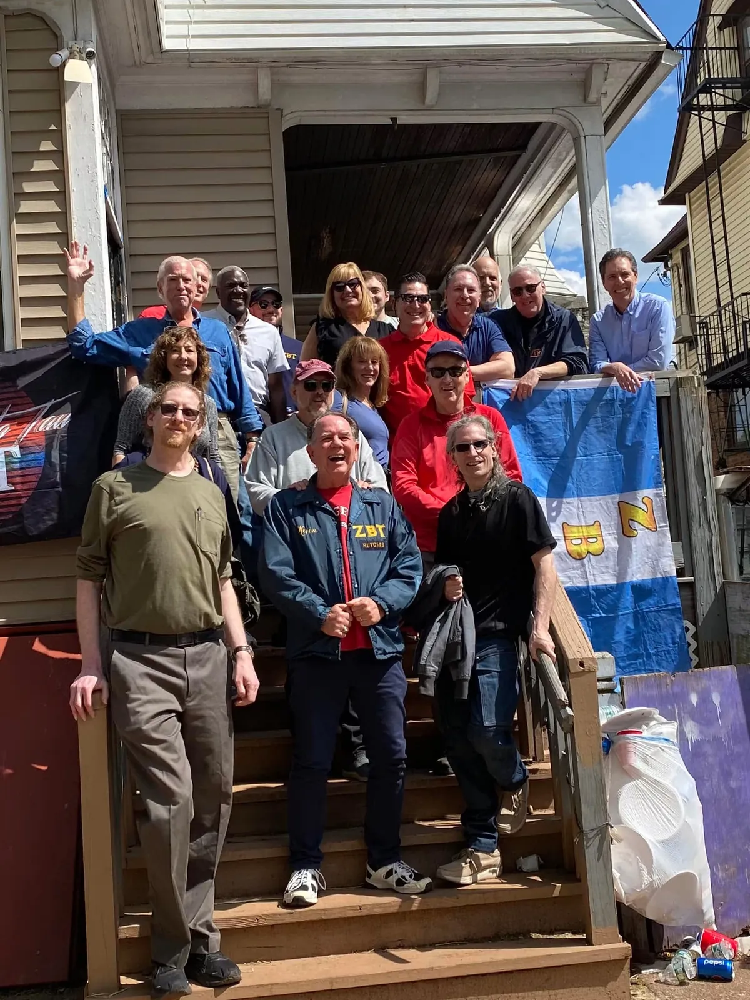
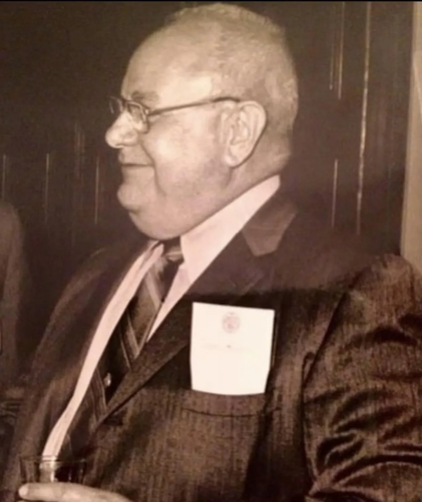
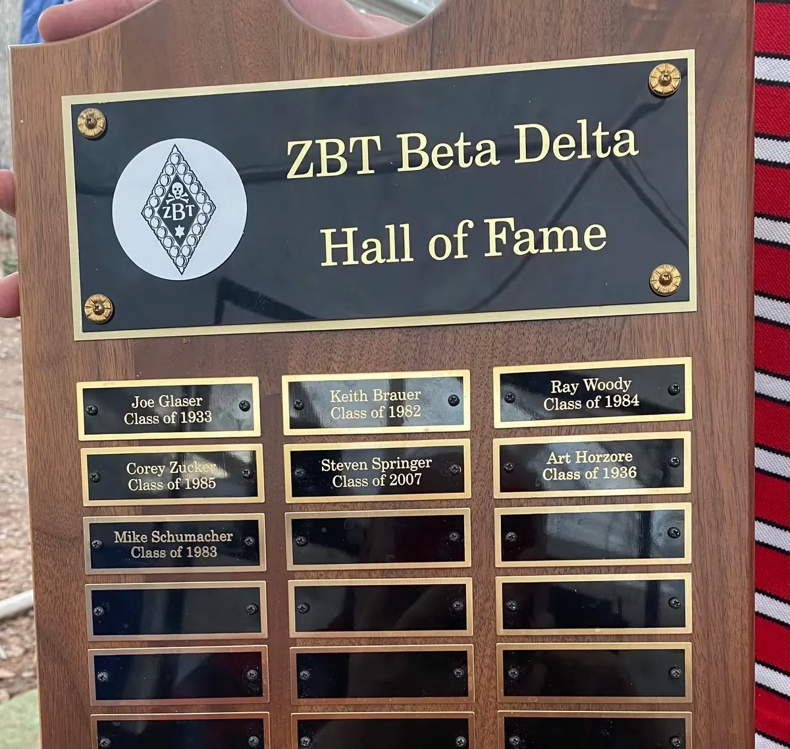

Brotherhood for a Lifetime
Alumni
For more than 75 years, Beta Delta alumni have preserved the chapter’s traditions through mentorship, reunions, housing support and lifelong relationships.
Alumni Hub
News, history and ways to stay involved
Alumni News
Awards, athletics, recruitment momentum, Tahiti and updates from 106 College Avenue.
Read the latest →Chapter HistoryComposite & Photo Archive
Explore chapter portraits, composites, newsletters and artifacts from 1949 through today.
Enter the archive →House HistoryChapter Houses Through the Years
See the verified homes that served Beta Delta across generations.
Explore the houses →August 30, 2026
Family & Alumni Open House
Families and alumni are invited to tour 106 College Avenue, meet the brothers and celebrate the opening of Beta Delta’s new chapter home.
1:00–5:00 PM
106 College Avenue · New Brunswick, New Jersey 08901

Stay Connected
Keep your information current
We want to stay connected with our alumni and continue building the Beta Delta network. Submit your current contact and professional information so the chapter can share future events, news and opportunities to reconnect.
Update Your Information

Founder
Joe Glaser
Joe Glaser founded the Beta Delta Chapter at Rutgers in 1948 and remained a longtime advisor and supporter. His leadership established the foundation that generations of brothers continue to build upon.
In recognition of his lasting impact, Joe is a member of the Beta Delta Hall of Fame.
Read the Founder StoryBeta Delta Hall of Fame
Recognizing a lifetime of contribution
The Hall of Fame honors alumni whose leadership, service and enduring commitment have strengthened Beta Delta across generations.
The 2025 inductees were Frank Sternberg ’86, Howdee Ballinger ’88 and Steve Royston ’10.
View Hall of Fame History
Alumni Events
Returning to the chapter across generations
Homecoming tailgates, reunions and special events give alumni opportunities to reconnect with one another and meet current brothers.
Alumni Chairmen Aidan Higgins and Evan Harkin coordinate chapter events and tailgates throughout the year.
Keep Reading
A lot is happening at Beta Delta
Explore recent awards, undefeated Keller seasons, recruitment growth and the chapter’s move into 106 College Avenue.
Read Alumni News